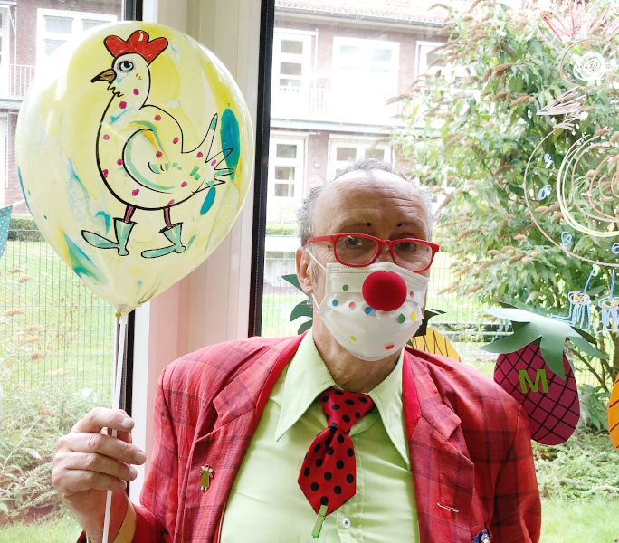

Kontakt
Michael Westermeier
Gasselstiege 115
48159 Münster
Telefon: +49 (0) 251 2 70 48 75
Mobil: +49 (0) 177 3 94 14 42
E-Mail: clown-konrad@email.de
Datenschutz

Auf meiner Website erhebe ich keinerlei Daten. Ich setze keine Cookies ein, es gibt keinen Newsletter, kein Tracking und auch sonst keine eingebundenen Medien. Ich weiß gar nicht, dass Sie da sind!
Lediglich mein Webhoster - GitHub, Inc., 88 Colin P Kelly Jr St, San Francisco, CA 94107, Vereinigte Staaten von Amerika - erhebt temporär die für den Betrieb notwendigen technischen Zugriffsdaten, zertifiziert konform zum EU-US-Privacy-Shield. Siehe dazu das GitHub Privacy Statement und die GitHub Global Privacy Practices.
Da ich juristischer Laie bin, kann ich nicht sicher sagen, ob diese Kurzerklärung voll ausreichend ist. Hier finden Sie daher noch eine ausführliche Datenschutzerklärung.